한국어로 쓰면 미드저니 · 런웨이 · Veo 프롬프트가 나옵니다. 대본을 통째로 넣으면 씬과 컷으로 알아서 나뉩니다. 번역기를 끼운 게 아니라, 지문에서 화면을 직접 조립합니다.
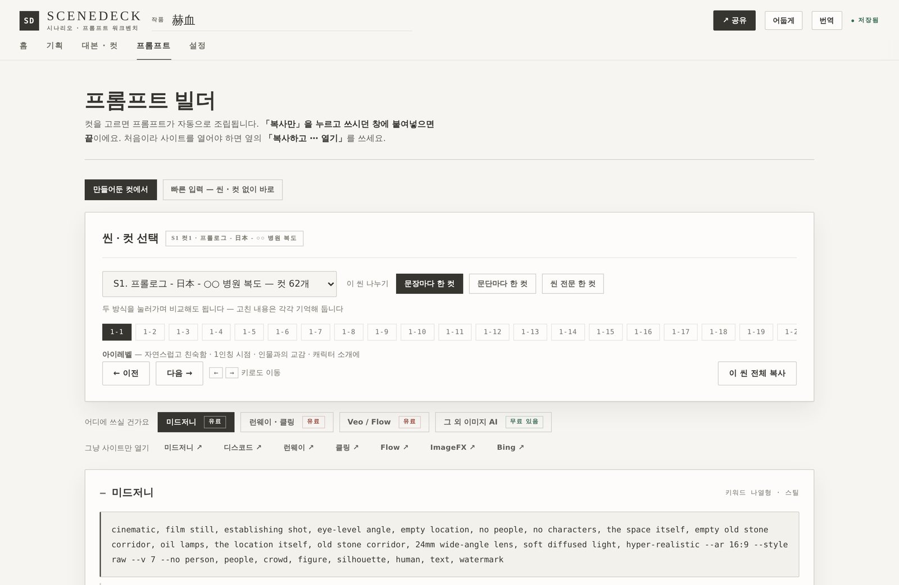
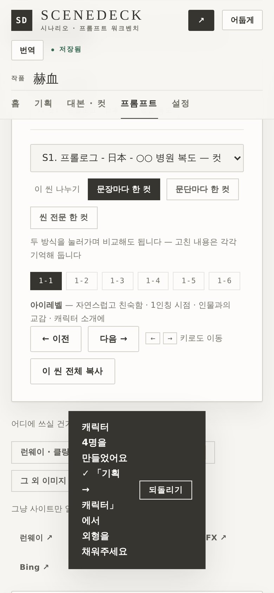
영화 제작사와 얼굴을 맞대는 건 주 1회입니다. 그 한 번에 결론이 나야 해서 대본 검토와 씬 브레이크다운, 장소 후보를 미리 만들어 갑니다. 씬마다 AI 레퍼런스도 직접 뽑습니다.
말로 설명하면 열 번을 오갑니다. 레퍼런스 한 장이면 한 번에 끝납니다. 그런데 그 한 장을 뽑는 데 매번 창을 두 개 띄우고 있었습니다. 쓸 만한 도구가 없어서 만들었고, 지금은 회의할 때 같이 띄워놓고 씁니다.
혼자 쓸 땐 제 머릿속에서 끝났는데,
여기선 열 명이 같은 그림을 봐야 움직였습니다.
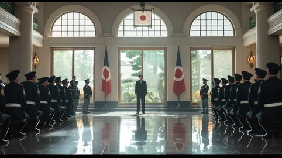
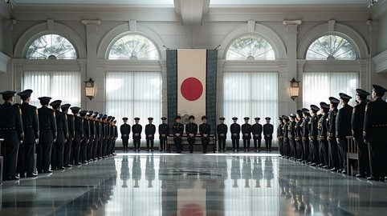
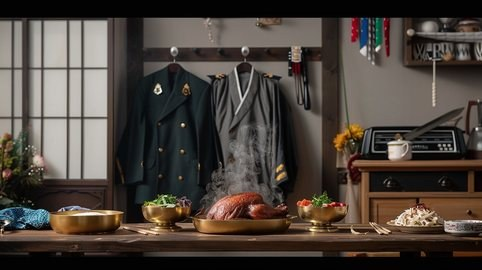
한국어를 넣으면 원하는 그림이 나오지 않습니다. 그래서 챗GPT를 하나 더 켜고, 한국어를 영어로 옮기고, 그걸 복사해 다시 붙입니다. 컷 하나에 창을 두 번 오갑니다. 컷이 백 개면 이백 번입니다.
완성도 있는 결과는 아직도 영어 프롬프트라야 나옵니다. 한국어로 쓴 문장은 결이 무너집니다.
--ar --style --no — 형식을 외워야 하고, 하나 틀리면 통째로 다시 넣어야 합니다.
컷마다 얼굴이 달라집니다. 의상이 바뀌고, 시대가 어긋나고, 두 명만 나와야 할 화면에 넷이 섭니다.
컷이 백 개면,
창을 이백 번 오갑니다.
STEP 1
docx · pdf · txt 를 그대로 올리거나 붙여넣습니다. 씬 번호와 지문을 알아서 읽습니다.
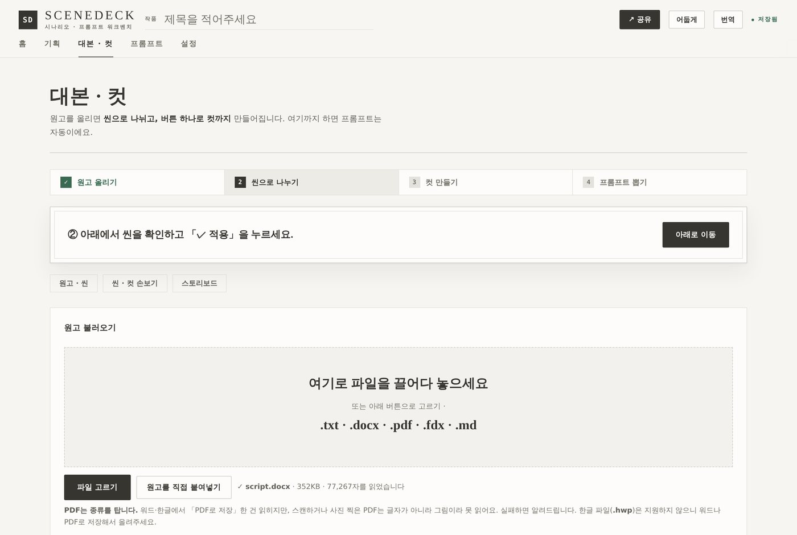
STEP 2
지문 한 덩어리가 컷 여러 개로 쪼개집니다. 샷 크기와 앵글이 붙고, 길이가 계산됩니다.
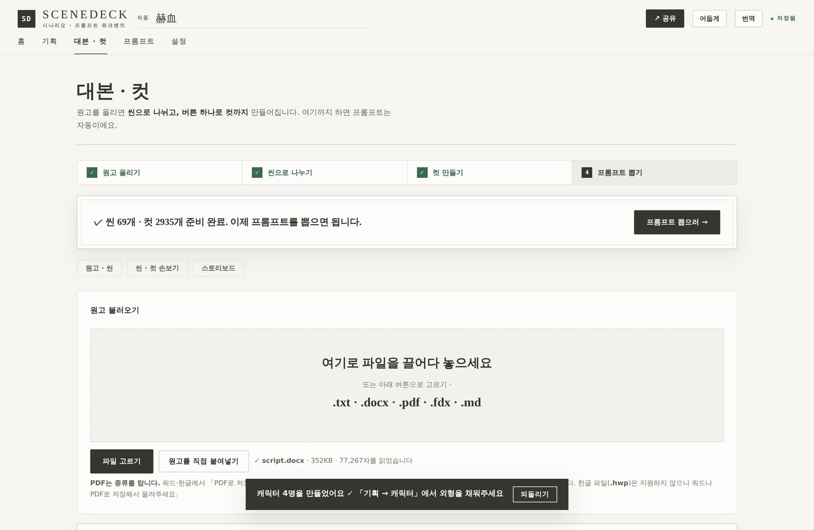
STEP 3
복사해서 바로 붙이면 됩니다. 영문 프롬프트 옆에 한글 되짚기가 같이 나오니, 무엇이 들어갔는지 눈으로 확인하고 고칠 수 있습니다.
아래는 씬덱이 실제로 뱉은 프롬프트를 그대로 옮긴 것입니다. 손대지 않았습니다.
cinematic, film still, establishing shot, eye-level angle, empty location, no people, no characters, the space itself, empty old stone corridor, oil lamps, the location itself, old stone corridor, 24mm wide-angle lens, soft diffused light, hyper-realistic --ar 16:9 --style raw --v 7 --no person, people, crowd, figure, silhouette, human, text, watermark
no people 과 --no person, people, crowd… 가 양쪽으로 붙습니다. 한쪽만 쓰면 사람이 들어옵니다.24mm 로 따라옵니다. 화각을 외울 필요가 없습니다.1944년이면 청바지도 손목시계도 나오지 않습니다. 「재킷」이라고 쓰면 데님이 나오니, 저고리를 저고리로 씁니다.
두 명만 나와야 하는 화면에 넷이 서지 않도록, 숫자를 문장과 --no 양쪽에 박습니다.
한 번 정한 얼굴 · 의상 · 나이를 그 인물이 나오는 모든 컷에 같은 문장으로 넣습니다.
취조 장면이 따뜻하게 나오지 않도록, 두 사람 사이의 힘 관계를 화면 언어로 씁니다.
실루엣 · 그림자 · 프레임 밖 · 직후 · 사물 인서트. 잘라내지 않고 담을 것을 바꿉니다.
넣기 전에 막힐 만한 것을 미리 짚어줍니다. --no 안에 쓴 단어까지 봅니다.
그리고 아무것도 밖으로 나가지 않습니다. 서버가 없고 계정도 없습니다. 설치도 없습니다. 쓴 내용은 이 브라우저 안에만 저장됩니다.
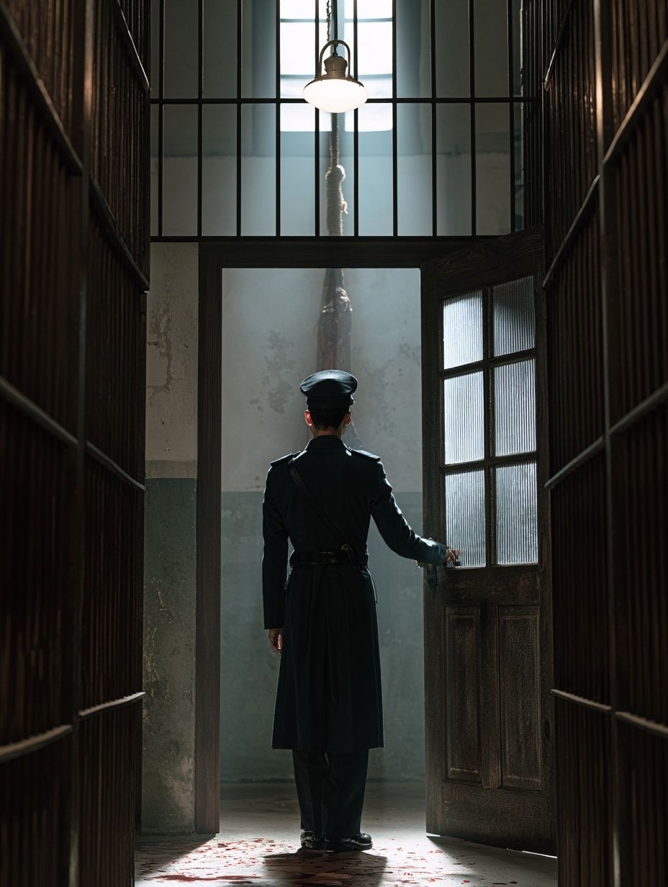
AI 도구는 어떤 장면을 거부합니다. 그때 대부분은 문장을 지우다가 장면을 잃습니다. 씬덱은 대신 화면에 무엇을 담을지를 바꿉니다 — 실루엣으로, 그림자로, 프레임 밖으로, 그 직후로, 사물 인서트로.
검열을 속이는 요령이 아니라 실제 영화 문법입니다. 보여주지 않는 편이 더 무섭다는 건 히치콕 때부터 알려진 것이고, 결과물이 오히려 좋아집니다.
왼쪽 컷이 그렇게 나온 것입니다. 사람은 보이지만, 얼굴은 없습니다.
같은 도구로 만든 세 갈래입니다. 결이 다른 건 작품이 다르기 때문이지, 도구를 바꿔서가 아닙니다.
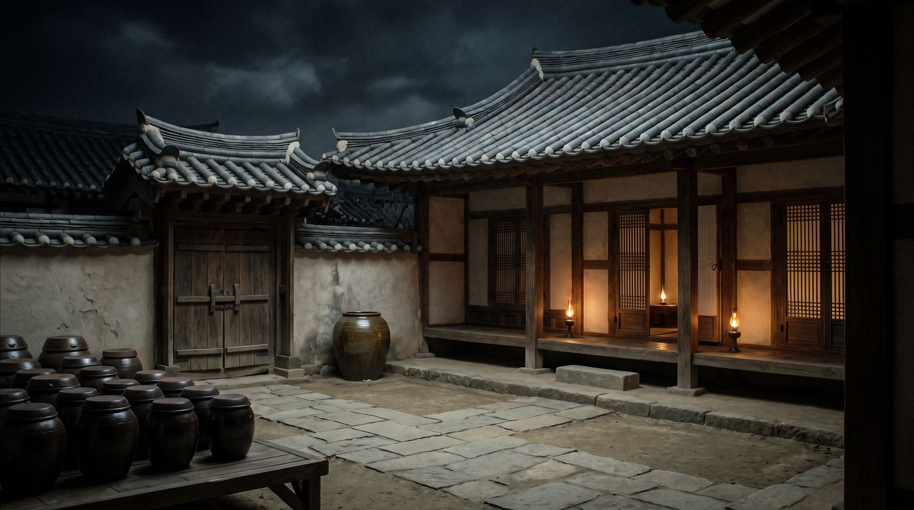
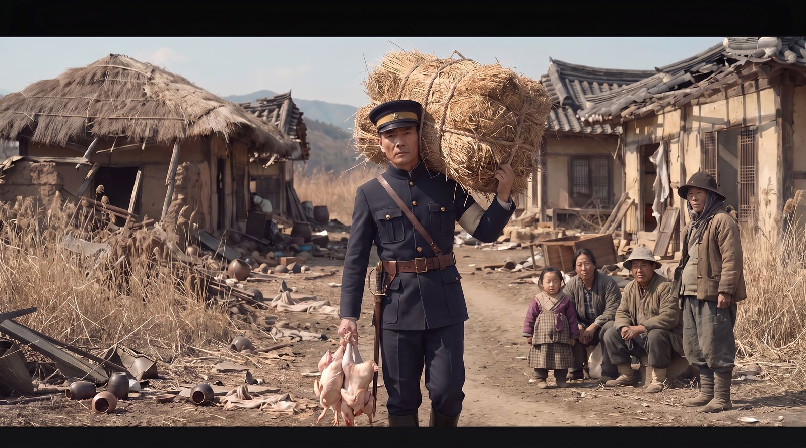
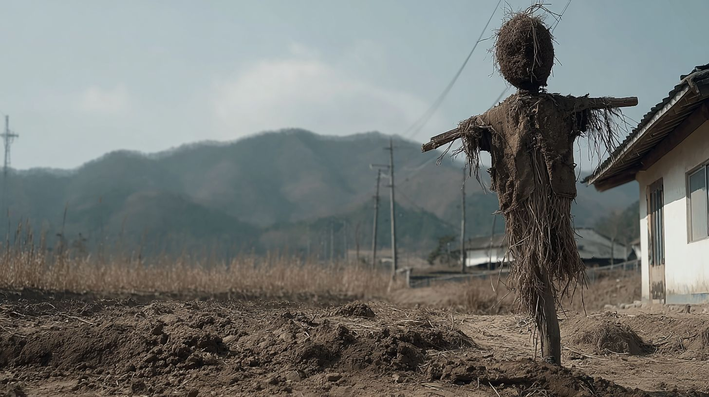
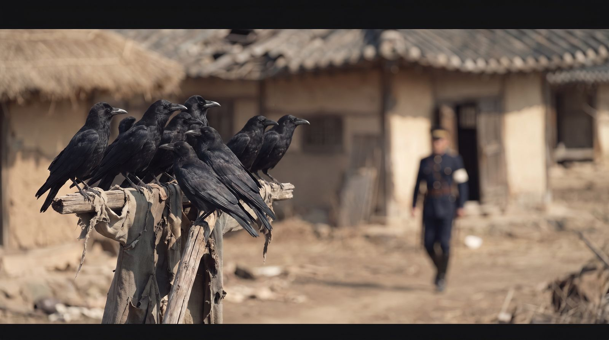
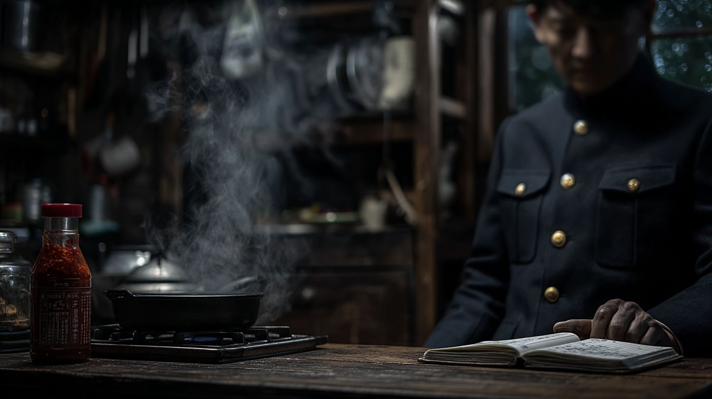
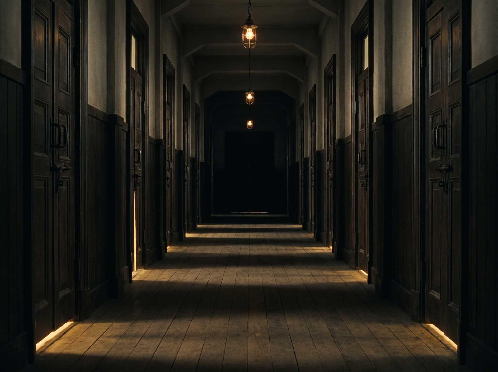
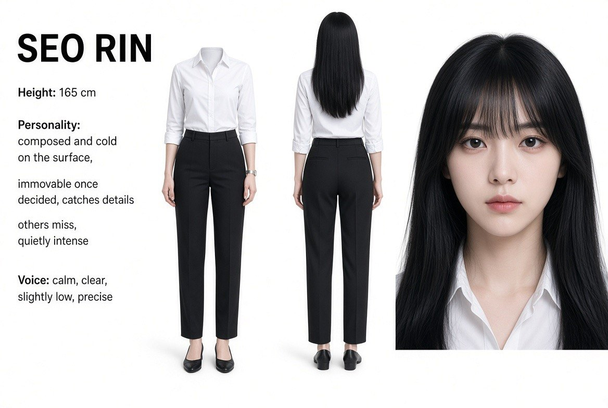
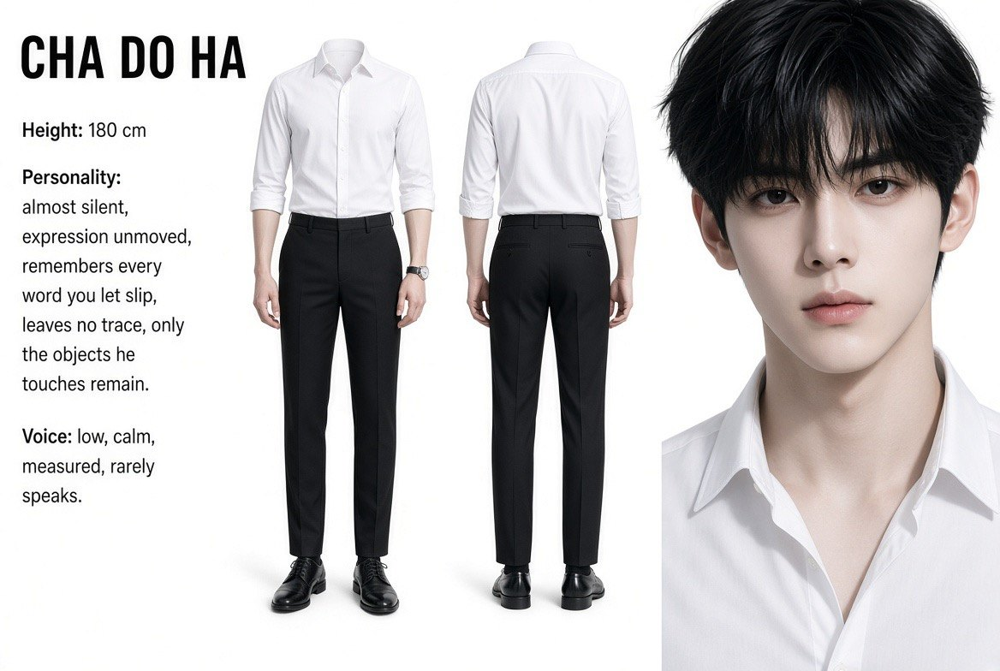
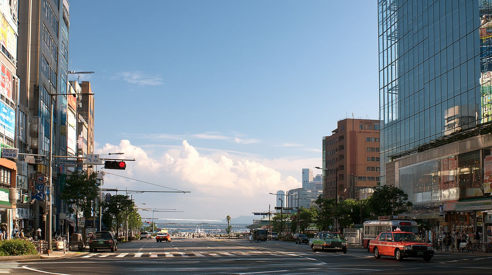
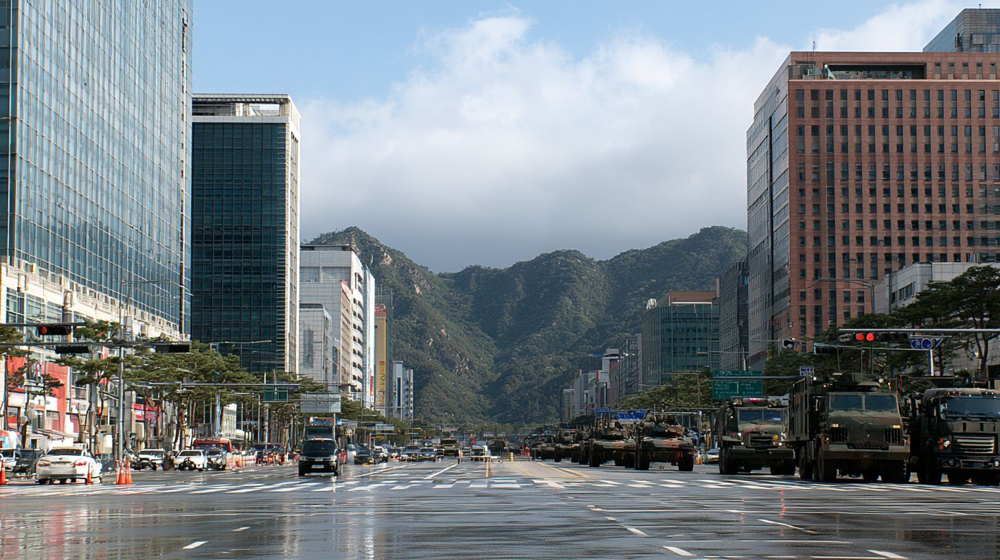
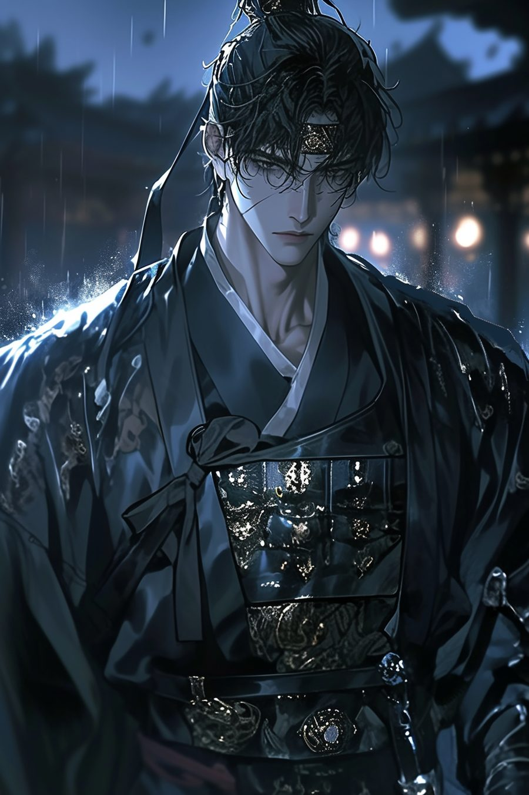
말로 열 번 오갈 걸,
레퍼런스 한 장으로.
정주원. 숭실대 문예창작 · 언론홍보 복수전공. 방송 구성작가로 일했고, 지금은 영화 제작사에서 장편 프리프로덕션을 합니다. 씬덱과 촬영 배치도 두 개 다 직접 코딩했습니다.
여기 들어 있는 규칙은 문서를 읽고 만든 게 아니라,
막히고 고치기를 반복하면서 하나씩 확인한 것입니다.
무엇이 통과하고 무엇이 막히는지, 어떤 단어를 무엇으로 바꿨더니 통과했는지 — 실측한 내용을 전부 문서에 공개해 두었습니다.
씬덱은 프롬프트를 만들어 주는 곳이라 그것만 쓰는 데는 아무 계정도 필요 없습니다. 만든 문장을 실제로 그림으로 바꾸려면 미드저니 · 런웨이 · Veo 같은 도구가 따로 있어야 합니다. 무료로 되는 것도 있어서, 앱 안에 어디가 무료인지 표시해 두었습니다.
아무 데도 가지 않습니다. 서버가 없습니다. 올린 대본도 만든 프롬프트도 전부 이 브라우저 안에만 저장됩니다. 그래서 브라우저 데이터를 지우면 같이 지워집니다 — 중요한 작업은 JSON으로 백업해 두세요. 백업과 복원은 잠그지 않습니다.
지금은 전부 무료입니다. 설치도 로그인도 없습니다. 나중에 유료판을 낸다 해도 지금 있는 기능을 뒤에서 잠그지는 않습니다.
됩니다. 한국어로 지문을 쓰면 영문 프롬프트가 나오고, 그 옆에 한글 되짚기가 같이 나옵니다. 무엇이 들어갔는지 한국어로 확인하고 마음에 안 드는 부분만 고치면 됩니다.
한 줄만 있어도 됩니다. 로그라인 한 줄을 적고 「한 줄만 적고 프롬프트만」으로 들어가면 씬·컷 없이 바로 프롬프트를 뽑을 수 있습니다.
아니요. 웹페이지 한 장이라 링크를 누르면 그게 끝입니다. 인터넷이 끊겨도 이미 열어둔 창에서는 계속 쓸 수 있습니다.
배우와 카메라를 놓고 조명을 세웁니다. 도면 · 카메라 뷰 · 조감도가 한 화면에 같이 뜨고, 렌즈와 카메라 높이까지 시트로 뽑아 현장에 가져갑니다. 이것도 설치 없이 브라우저에서 바로 됩니다.